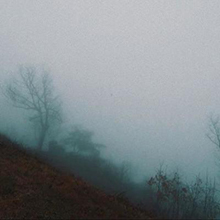
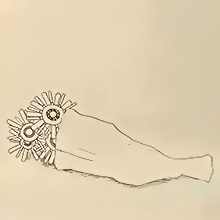
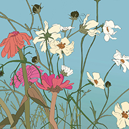

My Top 10 Favorites
Top 1
Eine Kleine

This song by Kenshi Yonezu from his 2014 album Yankee expresses the love between a man and a woman in a more tortured manner by showcasing the girl’s doubts and insecurity of having a love too good to be true.
Top 2
I Wanted to Dance in Your Pulse

This 2018 song by Picon expresses the misery of losing someone and the desperation of hoping they’ll stay by your side to stop the lackluster and unchanging days.
Top 3
Vivi

This song by Kenshi Yonezu from his 2012 album Diorama depicts the painful sadness of trying and failing to communicate and understand one another.
Top 4
Spring Day

This song by BTS from the 2017 album You Never Walk Alone is a reflective, passionate tune about love, loss, and yearning for the past.
Top 5
Transparent Answer

This song by Jin from the Mekakucity Actors and Mekakucity Days albums tells the story of a young boy, Shintaro Kisaragi, and his classmate, Ayano Tateyama. The song shows Shintaro’s grief over Ayano’s suicide and his regret of not being kinder to her.
Top 6
Run Away

This song by TOMORROW BY TOGETHER from the 2019 album The Dream Chapter: Magic explore the idea of escaping life’s burdens and figuratively running away with their friends.
Top 7
The Truth Untold

This song by BTS (ft. Steve Aoki) from the 2018 album Love Yourself: Tear expresses how the band feels towards their fans. It conveys the fear of showing your true self because you deem it as unsightly, thus creating a mask to hide behind, but still yearning for others to accept your true self.
Top 8
Ultimately

This song by Khai Dreams from the 2017 album Autumn's End talks about improving yourself and becoming a better person, even if it means temporarily parting ways, to prevent hurting the one you love. The song gives a feeling of assurance that everything will work out in the end.
Top 9
Still feel.

This song by half-alive from the 2019 album *7 is based around the concept of losing yourself and having an unknown sense of identity but continuing to search and have hope despite feeling rootless and hopeless.
Top 10
Little Wonders

This song by Rob Thomas from the movie Meet the Robinsons conveys the message that every moment is a little wonder and will remain with us forever. The song expresses that we should not dwell too much on the past nor wish for it to change because what's important is the emotion we felt at the time.